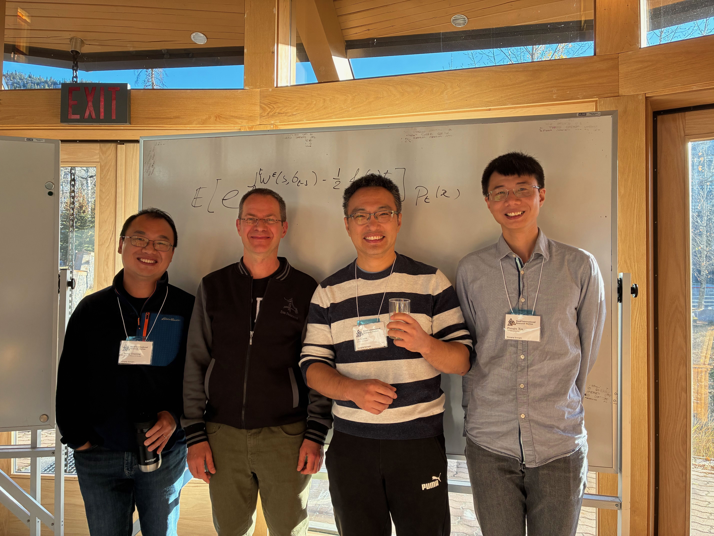

The Team

Cheng Ouyang (UIC) · Samy Tindel (Purdue) · Le Chen (Auburn) · Panqiu Xia (Cardiff)
Classical Directed Polymer
Random walk weighted by a random environment (see Comets (2017) for the full theory)
- Walk: simple random walk $S = (S_n)_{n=0,1,\ldots,N}$ on $\mathbb{Z}^d$, started at $S_0 = 0$ with law $\mathbb{P}_0$.
- Environment: i.i.d. random variables $\{\xi(n,x) : n \ge 1,\, x \in \mathbb{Z}^d\}$, representing local random energy rewards/penalties.
- Temperature: inverse temperature $\beta > 0$ controls disorder strength: larger $\beta$ means stronger localization effects.
Random walk in a random environment
Image: Le Chen / Midjourney
Partition Function & Polymer Measure
Partition function and quenched polymer measure:
$$Z_N(\beta) \;=\; \mathbb{E}_0\!\left[\exp\!\left( \beta\!\sum_{n=1}^N \xi(n, S_n)\right)\right],$$ $$\mathbb{P}_N^{\beta,\xi}(\mathrm{d}S) \;=\; \frac{1}{Z_N(\beta)}\, \exp\!\left(\beta\!\sum_{n=1}^N \xi(n, S_n)\right) \mathbb{P}_0(\mathrm{d}S).$$Huse & Henley '85 (physics) · Imbrie & Spencer '88 (math) · Comets '17 (modern synthesis).
Our question: can this be defined in continuous space-time?
The Challenge
Discrete sum is meaningful; continuum integral against $\dot W$ is not
Discrete polymer
$$Z_N(\beta) = \mathbb{E}_0\!\left[\exp\!\left(\beta\!\sum_{n=1}^N \xi(n, S_n)\right)\right]$$
i.i.d. noise at lattice sites: sum first, then exponentiate.
Continuous polymer?
$$\mathcal{Z}(s,y;\,t,x;\,\beta) \stackrel{?}{=} \mathbb{E}_y\!\left[\delta_x(X_t)\, \exp\!\left(\beta\!\int_s^t \dot{W}(r, X_r)\,\mathrm{d}r\right)\right]$$
Here $\dot W$ is a distribution, so the path integral is ill-defined.
The Feynman-Kac representation breaks down at the discrete $\to$ continuous limit — and that is only the first symptom.
Why Directed Polymers?
One Feynman–Kac object — three windows onto modern math/physics
endpoint $\to$ directed landscape;
free energy $\sim$ Tracy–Widom
Comets '17, Ch. 8 · DOV '22
$\mathcal{Z}$ solves
$(\partial_t - \tfrac{1}{2}\Delta)u = \beta\, u\, \dot{W}$
Mueller '91 · Bertini–Giacomin '97
$\log\mathcal{Z}$ solves KPZ;
$\partial_x\log\mathcal{Z}$ solves stochastic Burgers (Hopf–Cole)
Bertini–Giacomin '97 · Bakhtin–Li (CPAM '19) $\to$ slide 37
The continuous, $d$-dimensional case is where all three remain mostly open.
$\downarrow$ slide 9: defining $\mathcal{Z}$ rigorously
The Spectral Gate
Dalang's condition: the key that unlocks continuous polymers
Homogeneous in space · $f$ nonnegative & nonnegative-definite
White in time · Martingale theory · Nonlinear SPDE $b(u)$
Sharper variant $\Upsilon_\eta(\beta)<\infty$ controls partition-field regularity — $\downarrow$ slide 31.
Why spatially colored noise?
Function-valued SPDEs, universality, and physical models
- Function-valued solution instead of singular SPDEs.
- Universality depends on spatial dimension $d$ and the structure of the noise.
-
Medina, Hwa & Kardar '89:
- Random walk in a turbulent flow
- Directed polymer: impurities interacting with the interface; anticorrelated impurities.
- Surface growth with charged ions: interacting via long-range Coulomb force.
Random walk in a turbulent flow
Medina, Hwa & Kardar '89
Great Red Spot, Voyager I (1979) · Wikipedia
Classical vs. Singular SPDEs
From smooth solutions to renormalization
Image: Le Chen / OpenAI Sora
The Regularity Barrier
Classical SPDEs vs. Singular SPDEs
Image: Le Chen / Nano Banana Pro
The Second Ingredient
Rough initial data: measures with sub-Gaussian tails
Admissible initial data. A (signed) measure $\mu$ on $\mathbb{R}^d$ with
$\displaystyle \int_{\mathbb{R}^d}\! e^{-a|x|^2}\,|\mu|(\mathrm{d}x) < \infty \quad\text{for every } a > 0.$
Any measure with tails decaying faster than Gaussian — including $\mu = \delta_y$.
The Dirac mass is admissible — and it is the key.
L. Chen & R. Dalang (thesis 2013, paper 2015)
Point-to-Point Partition Field $\mathcal{Z}$
Formal expression is ill-defined; SHE gives the rigorous object
Formal (ill-defined):
$\displaystyle \mathcal{Z}(s,y;\,t,x;\,\beta) \stackrel{?}{=} \mathbb{E}_y\!\left[\delta_x(X_t)\, \exp\!\left(\beta\!\int_s^t \dot W(r,X_r)\,\mathrm{d}r\right)\right].$
Rigorous construction. $\mathcal{Z}(s,y;\,t,x;\,\beta)$ is the Itô-renormalized solution to
$$\Bigl(\tfrac{\partial}{\partial t} - \tfrac{1}{2}\Delta_x\Bigr)\,\mathcal{Z} \;=\; \beta\,\mathcal{Z}\,\dot W(t,x),$$with initial condition $\displaystyle \lim_{t\downarrow s}\mathcal{Z}(s,y;\,t,\cdot;\,\beta) = \color{#CCFF33}{\boldsymbol{\delta_y(\cdot)}}.$
The SHE solution defines the point-to-point partition field.
Structural Properties of $\mathcal{Z}$
Five properties that make it a genuine transition kernel [COTX '26+]
- Positivity: $\mathcal{Z}(s,y;\,t,x;\,\beta) > 0$ a.s.
- Centrality: $\mathbb{E}[\mathcal{Z}] = p_{t-s}(x-y)$ (heat kernel)
- Stationarity: invariant under time-space shifts
- Chapman–Kolmogorov: $$\mathcal{Z}(s,y;\,t,x) = \int_{\mathbb{R}^d}\mathcal{Z}(s,y;\,r,z)\;\mathcal{Z}(r,z;\,t,x)\,\mathrm{d}z$$
- Independence: on disjoint time intervals
Exactly what's needed to build a path measure.
The Polymer Measure
Replace the formal Gibbs weight by a chain of SHE kernels
Formal Gibbs measure (ill-defined):
$\displaystyle \frac{\mathrm{d}\mathbb{P}_\beta^W}{\mathrm{d}\mathbb{P}_0}(X) \stackrel{?}{=} \frac{1}{Z_T}\, \exp\!\left(\beta\!\int_0^T \dot W(s, X_s)\,\mathrm{d}s\right).$
Rigorous finite-dimensional distributions.
For $0=t_0
The polymer measure is built from transition kernels $\mathcal{Z}$.
Itô Renormalization
Mollify → subtract counterterm → take the limit
Step 1: smooth the noise in space, producing $W^\varepsilon$.
Step 2: subtract $\tfrac{\beta^2}{2}k_\varepsilon(0)$ to remove the exploding variance.
Like weighing a feather on a scale constantly shaken by a million pounds of pressure.
Step 3: take $\varepsilon\to0$ — converges to the SHE solution $\mathcal{Z}$.
Under the Microscope
Polymer paths have the same local geometry as Brownian motion
Theorem (Local path behavior). [C.–Ouyang–Tindel–Xia, '26+]
Brownian local geometry survives:
- Paths are $C^{1/2-\varepsilon}$ for every $\varepsilon > 0$ (quenched a.s. under $\mathbb{P}_\beta^W$).
- Quadratic variation: $\langle X \rangle_t = t\,I_d$ (annealed).
Under the microscope, the polymer IS Brownian motion.
Same roughness · same quadratic variation · indistinguishable locally.
The Singularity Dichotomy
Theorem (Sharp criterion). [C.–Ouyang–Tindel–Xia, '26+]
$\displaystyle\widehat{f}(\mathbb{R}^d) = \infty$ $\Longleftrightarrow$ $\mathbb{P}_\beta^W \perp \mathbb{P}_0$ a.s.
$\displaystyle\widehat{f}(\mathbb{R}^d) < \infty$ $\Longleftrightarrow$ $\mathbb{P}_\beta^W \sim \mathbb{P}_0$ a.s.
The spectral mass alone decides everything.
What Does $\mathbb{P}_\beta^W \perp \mathbb{P}_0$ Mean?
There exists a set $A_W$ of paths such that:
- $\mathbb{P}_\beta^W(A_W) = 1$ — the polymer lives here
- $\mathbb{P}_0(A_W) = 0$ — Brownian motion never visits
“Two counterfeit paintings. Under a magnifying glass, the brushstrokes
look identical. But under UV light, one is made of completely different paint.”
How do we prove it?
Radon–Nikodym meets dyadic martingale meets Wiener chaos
Continuum paths force a dyadic discretization first.
1. Restrict to a dyadic skeleton of times.
2. Form the likelihood ratio $Y_n$ — a positive martingale.
3. Decompose $\log Y_n$ via Wiener chaos; read off a negative drift.
Spectral mass controls the drift $\Rightarrow$ $Y_n \to 0$ or $Y_n \to Y > 0$.
Trace-Class: Equivalence
When $\widehat{f}(\mathbb{R}^d)<\infty$, noise is evaluated along the path
A bona fide exponential martingale: positive, finite, $L^2$-bounded.
[Rovira & Tindel '05] · [Lacoin '11] · Comets '17 textbook
The two measures see the SAME paths — just with different probabilities.
Two Orthogonal Classifications
Dichotomy (measure-theoretic) · Weak / Strong disorder (fluctuation class)
|
Equivalent (trace-class) |
Singular (non-trace-class) |
|
|---|---|---|
|
Weak disorder |
Classical CLT (Rovira–Tindel & extensions) |
CLT still holds! singular measures, Gaussian fluctuations |
|
Strong disorder |
Largely open (conjectural new universality) |
Largely open (conjectural new universality) |
Weak: $d\ge 3$, $\beta<\beta_0$, $\Upsilon(0)<\infty$ · Strong: $d\le 2$ or $\beta\ge\beta_0$ or $\Upsilon(0)=\infty$
Different questions — with a shared spectral input.
Why $d \ge 3$?
Pólya's theorem (1921) — recurrence vs. transience
🚶
$d \le 2$: recurrent
“A drunk man finds his way home.”
Paths keep revisiting earlier regions.
🐦
$d \ge 3$: transient
“A drunk bird may get lost forever.”
Space is large enough to escape repeated trapping.
Transience translates to $\displaystyle\int_0^\infty f(X_s-\widetilde{X}_s)\,\mathrm{d}s<\infty$ — preventing strong localization.
Weak Disorder Regime
$d\ge 3$ · $\beta<\beta_0$ · $\Upsilon(0)<\infty$ (slightly weaker than trace-class)
Theorem (Diffusive CLT). [C.–Ouyang–Tindel–Xia, '26+]
If $d\ge 3$, $\Upsilon(0)<\infty$, and $\beta<\beta_0:=\frac{1}{2\,\Upsilon(0)^{1/2}}$, then
$$\mathbb{E}_T^{\beta,W}\!\left[g\!\left(\frac{X_T}{\sqrt{T}}\right)\right] \xrightarrow[\;\text{in prob.}\;]{\;T\to\infty\;} \int g\,\mathrm{d}\nu, \quad \nu=N(0,I_d).$$The polymer FORGETS the environment and diffuses asymptotically like free Brownian motion.
$\Upsilon(0)<\infty$ is not trace-class; the $1/|\xi|^2$ kernel tames some non-trace-class tails in $d\ge 3$.
Spectral Hierarchy
Which noise $f$ lands in which regime?
| Noise type | $\widehat{f}(\mathbb{R}^d)$ | Dalang? | Verdict |
|---|---|---|---|
| Space-time white | $\infty$ | Yes ($d=1$) | $\perp$ |
| Riesz $|x|^{-\alpha}$ | $\infty$ | Yes if $\alpha<2\wedge d$ | $\perp$ |
| Bounded $L^1$ density | $<\infty$ | Yes | $\sim$ |
| Smooth compact support | $<\infty$ | Yes | $\sim$ |
The boundary is precisely the trace-class property of the noise covariance.
The Dalang Hierarchy
Three nested assumptions on the spectral measure [COTX '26+]
1. Dalang · $\Upsilon(\beta)<\infty$
$\Rightarrow$ SHE exists in every dimension.
2. $\Upsilon(0)<\infty$ · $\displaystyle\int \frac{\widehat f(\mathrm{d}\xi)}{|\xi|^2}<\infty$
$\Rightarrow$ Diffusive CLT in $d\ge3$.
3. Trace-class · $\widehat{f}(\mathbb{R}^d)<\infty$
$\Rightarrow$ Singularity Dichotomy.
Trace-class $\subset$ $\{\Upsilon(0)<\infty\}$ (in $d\ge3$) $\subset$ Dalang
Riesz-type Correlation Kernels
Spectral-condition regions in $(s_1,s_2)$ parameter space

Two parameters $(s_1,s_2)$ tune local singularity and tail decay, yielding a finer taxonomy of noise classes.
$s_1$ controls blow-up at zero; $s_2$ controls far-field decay.
Two knobs $\Rightarrow$ finer-grained noise taxonomy.
[Chen & Eisenberg '22]
$\eta$-regularity tradition: Dalang–Sanz-Solé–Sarrà '07
The Open Mystery
We can prove $\mathbb{P}_\beta^W \perp \mathbb{P}_0$ with mathematical certainty.
But we do not know WHAT about the path gives it away.
The discriminating set $A_W$ exists — but no explicit description is known.
“The imposter is there. We just can't describe it.”
Strong Disorder Regime
Any CLT hypothesis fails: $\beta\ge\beta_0$ · $d\le2$ · $\Upsilon(0)=\infty$
Path behavior: the polymer LOCALIZES.
- Concentrates on favored corridors.
- Endpoint distribution: non-Gaussian, largely open for $d\ge 2$.
Free-energy fluctuations: new universality classes.
- trace-class $\Rightarrow$ Gaussian (Edwards–Wilkinson)?
- non-trace-class $\Rightarrow$ KPZ variants in $d=1$?
- critical decay $\Rightarrow$ new crossover laws?
The Polymer Zoo
A spectrum of directed polymer models — from discrete to fully continuous
| Model | Time | Space | Environment |
|---|---|---|---|
|
Comets / Imbrie–Spencer
classical discrete polymer
|
$\mathbb{N}$ | $\mathbb{Z}^d$ | i.i.d. at lattice sites |
|
Bakhtin–Li '16
time-discrete, space-continuous
|
$\mathbb{Z}$ | $\mathbb{R}$ | i.i.d. kicks $F_n(\cdot)$ |
|
Alberts–Khanin–Quastel '14
continuum polymer in $d=1$
|
$\mathbb{R}_+$ | $\mathbb{R}$ | space-time white noise |
|
This work
Chen–Ouyang–Tindel–Xia '26+
|
$\mathbb{R}_+$ | $\mathbb{R}^d$ | white-in-time, colored-in-space |
Bakhtin–Li sits in the middle — discrete time, continuous space.
From Discrete to Continuous — What Breaks?
Comets '17 lattice machinery vs. SHE continuum polymer
| Question | Discrete (Comets) | Continuum (SHE) |
|---|---|---|
| Path integral? | $\checkmark$ finite sum $\sum_j \omega(j, S_j)$ | $\times$ $\int_0^T\!\dot W(t, B_t)\,dt$ ill-defined |
| Existence? | always | needs Dalang's condition $\Upsilon(\beta)<\infty$ |
| $\mathcal{Z} > 0$? | trivial (positive sum) | theorem · comparison principle [Chen–Huang '19] |
| $\mathbb{P}_\beta^W$ vs. $\mathbb{P}_0$? | absolutely continuous | singular when $\widehat f(\mathbb{R}^d) = \infty$ |
| Renormalization? | none needed | Wick exponential ${:}\mathrm{e}^{X}{:}$ |
| Phase transition? | $(\beta,\, d)$ | $(\beta,\, d,\, \widehat f)$ — spectral |
Comets' machinery rests on a finite Gibbs sum. The continuum theory rests on a Wick-renormalized $\mathcal{Z}$-field.
Detailed audit: SPDEs-wiki / discrete-to-continuous-directed-polymers
A Parallel Semi-Discrete Program: Bakhtin–Li (CPAM 2019)
Discrete time, continuous space — same Feynman–Kac / Hopf–Cole backbone
Semi-discrete kicked Burgers
$\partial_t u + u\partial_x u = \vk\,\partial_{xx}u + \sum_{n\in\mathbb{Z}} f_n(x)\,\delta_n(t)$
$n\in\mathbb{Z}$, $x\in\mathbb{R}$ — Hopf–Cole gives polymer kernel $\ZBL{x,y}{m,n}$.
- Free-energy LLN: $\frac{1}{n}\log Z_{x,y}^{m,n} \xrightarrow{\text{a.s.}} \alpha_0 - \frac{v^2}{2}$
- 1F1S (Burgers velocity): unique stationary $u_v$ per slope, depending only on past forcing (pullback attractor)
Exponent upper bounds
$\chi \le \tfrac{1}{2}$
free-energy concentration
$\xi \le \tfrac{3}{4}$
transversal fluctuation
KPZ values
$\chi=\tfrac13,\,\xi=\tfrac23$ still open
Structural prerequisites match: our $\mathcal{Z}$ has Chapman–Kolmogorov, stationarity, positivity (↑ Structural Properties) — the same skeleton Bakhtin–Li use. Continuous space-time 1F1S is open: Q2 ↓
Open Problems at the Intersection
Where the SHE program meets Bakhtin–Li
Q1. Can SHE moment bounds sharpen $\chi \le 1/2$ toward the KPZ value?
Q2. Do thermodynamic limits + 1F1S extend to continuous space-time polymer kernels?
Q3. What universality classes emerge for $d\ge2$ polymers with colored noise?
Q4. Does the singularity dichotomy have an analog in the kicked-Burgers setting?
Where We Started · Where We Are · Where We Go
A talk in three beats
We asked.
Can $\displaystyle\int_0^T \dot W(t,X_t)\,\mathrm{d}t$ define a continuous polymer? — ill-defined; Feynman–Kac breaks down.
↓
We built.
$\mathcal{Z}(s,y;t,x;\beta)$ — SHE-renormalized, with full structural skeleton: positivity, stationarity, Chapman–Kolmogorov, independence.
Singularity dichotomy · weak-disorder CLT · local Brownian behavior.
↓
We're open at.
- 1F1S in continuous space-time (Q2) — structural skeleton already in place; one thermodynamic-limit step away.
- Localization in strong disorder ($d\le 2$, $\Upsilon(0)=\infty$) — favored corridors? endpoint distributions for $d\ge 2$?
- Universality classes, noise-dependent (Q3) — trace-class $\to$ Edwards–Wilkinson? non-trace-class $\to$ KPZ variants? critical decay $\to$ new crossovers?
- KPZ exponents — bridge from Bakhtin–Li's $\chi\le\tfrac12$, $\xi\le\tfrac34$ to colored-noise SHE.
- The Open Mystery — the discriminating set $A_W$ exists; we still cannot describe it.
Where the Field Stands
Three threads — discrete · semi-discrete · continuous
| 1985–88 | Huse–Henley · Imbrie–Spencer: discrete polymer is born — lattice $\mathbb{Z}^d$, i.i.d. environment |
| 1999 | Dalang's condition: spectral gateway for SHE/SPDE |
| 2013 | Chen–Dalang: rough initial data for SHE, $d=1$ |
| 2014 | Alberts–Khanin–Quastel: continuum polymer, $d=1$ |
| 2016 | Bakhtin–Li: thermodynamic limits + 1F1S for kicked Burgers |
| 2017 | Comets (Saint-Flour): monograph of the discrete polymer world |
| 2019 | Chen–Kim · Huang: rough IC for SHE, $d\ge 1$ |
| 2026 | Chen–Ouyang–Tindel–Xia: $d$-dimensional polymers, colored noise |
| 202? | Continuous-space programs converge? (open direction) |
Selected References
[1] R. Dalang, Extending the martingale measure stochastic integral with applications to spatially homogeneous s.p.d.e.'s, Electron. J. Probab. (1999)
[2] L. Chen & R. Dalang, Moments and growth indices for the nonlinear SHE with rough initial conditions, Ann. Probab. (2015)
[3] T. Alberts, K. Khanin, J. Quastel, The continuum directed random polymer, J. Stat. Phys. (2014)
[4] Y. Bakhtin & L. Li, Thermodynamic limit for directed polymers and stationary solutions of the Burgers equation, Comm. Pure Appl. Math. 72(3), 536–619 (2019)
[5] F. Comets, Directed Polymers in Random Environments (Saint-Flour XLVI), Springer (2017)
[6] L. Chen, C. Ouyang, S. Tindel, P. Xia, A class of $d$-dimensional directed polymers in a Gaussian environment, arXiv:2603.06574 (2026)
More references & podcasts: spdes-bib.readthedocs.io
Acknowledgments
Supported by NSF DMS-CAREER
No. 2443823
(2025–2030),
and Simons Foundation No. 959981 (2022–2027)
Animations built with the Manim Community open-source library — thanks to the community of contributors.